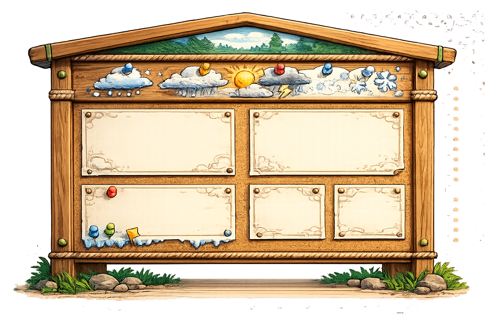

← CAMP
STORM WATCH STATION
WEATHER RESEARCHSTORM WATCH
STORM WATCH
STATION
Choose a severe weather event. Build your preparation plan by exploring what it is, what causes it, what you may experience, and how people stay safe.

Pick one weather type to study first. Each guide gives you facts, supplies, sensory details, safety ideas, and story ideas.
STORM JOURNAL
WEATHER STORY
WEATHER STORY
WORKSHOP
Imagine that you are getting ready for severe weather. Think about what the sky looks like, what your family does to prepare, what you wear, and how you stay safe when the weather arrives.
🔎Choose
🎒Prepare
👀Notice
🦺Stay Safe
💭Remember
Storm Opening
I looked out the window and noticed the weather was changing. The air felt different, and everyone in my home started getting ready. I knew this weather could be serious, so I paid close attention to what we needed to do next.
Question Trail
- What kind of severe weather is coming?
- How do people prepare before it arrives?
- What do you see, hear, feel, or smell when the weather begins?
- What supplies or clothing help people?
- What safe choice helps the narrator?